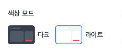
토스증권
설정 › 색상 모드 라이트 선택
라이트·다크 미리보기 카드 2종. 라이트 선택 시 즉시 반영.
1139×772 · 영역 캡처 · 2026-11-25 14:28:07125장

라이트·다크 미리보기 카드 2종. 라이트 선택 시 즉시 반영.
1139×772 · 영역 캡처 · 2026-11-25 14:28:07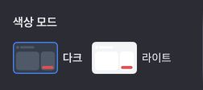
바꾸면 열린 설정과 뒤 배경이 함께 바뀜.
1139×772 · 영역 캡처 · 2026-11-25 14:28:31
연구 도구 사이드 창 위치와 대응. 왼쪽을 선택한 상태.
1139×772 · 영역 캡처 · 2026-11-25 14:28:31
같은 카드 안에서 현재 위치를 확인하고 즉시 바꿈.
1139×772 · 영역 캡처 · 2026-11-25 14:28:32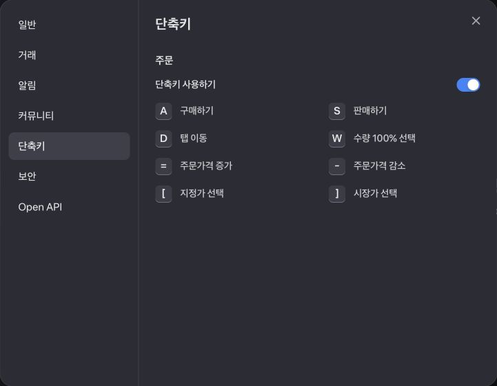
켜기·끄기를 포함한 키 조작 설정.
1139×772 · 영역 캡처 · 2026-11-25 14:29:42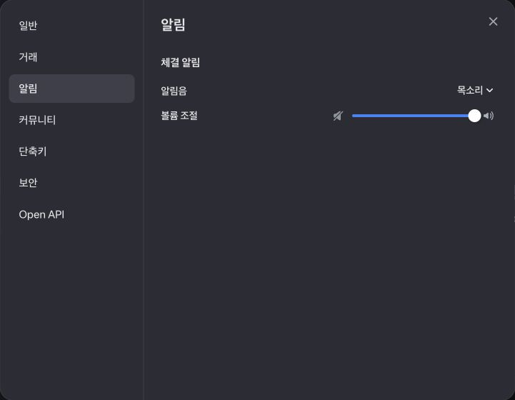
앱 사용·거래에 반영되는 설정은 읽음만. 조작은 표시를 확인.
1139×772 · 영역 캡처 · 2026-11-25 14:29:43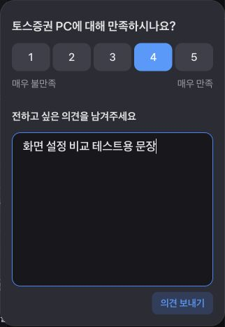
제출 가능 상태까지. 운영 서비스로 의견은 보내지 않음.
1139×772 · 영역 캡처 · 2026-11-25 14:31:11
날짜 선택과 시장 일정을 비교할 공개 화면.
1280×720 · 영역 캡처 · 2026-11-25 14:53:01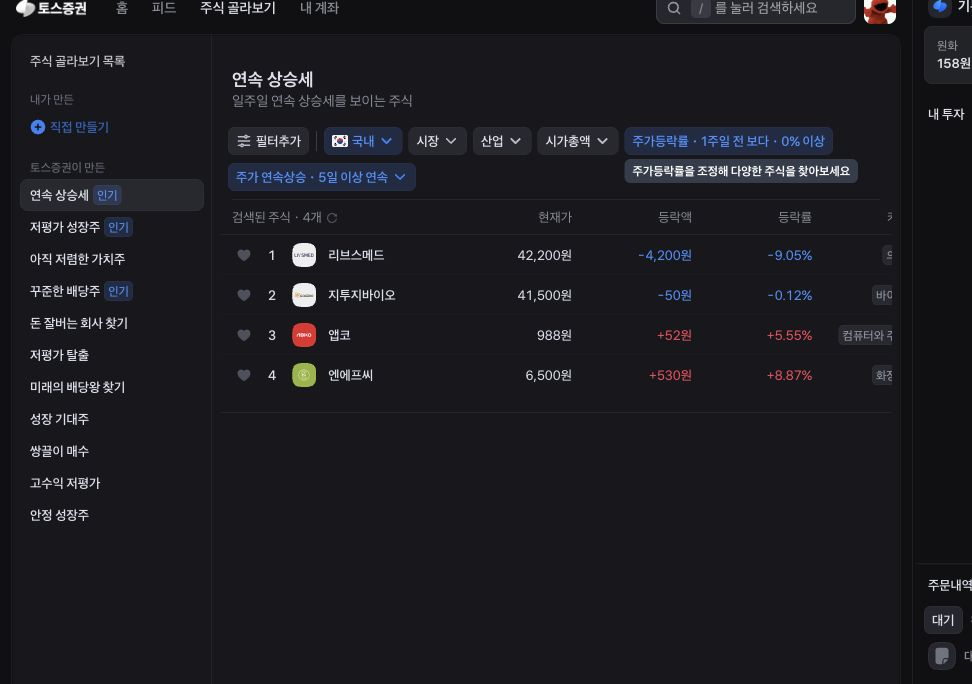
조건을 선택해 목록을 좁히는 탐색 화면.
1280×720 · 영역 캡처 · 2026-11-25 14:53:02
이전·다음 달 조작 뒤 날짜 내용이 바뀜.
1280×720 · 영역 캡처 · 2026-11-25 14:54:59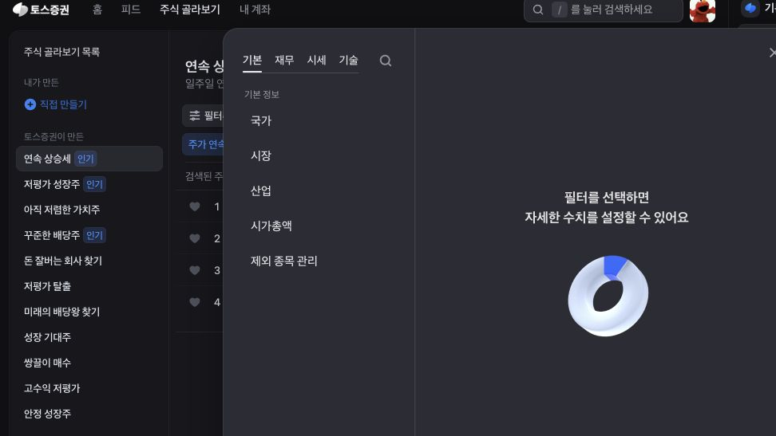
조건을 추가하는 선택 목록. 주문 조작은 수행하지 않음.
1280×720 · 영역 캡처 · 2026-11-25 14:54:59
국가·시장·산업을 독립적으로 좁히는 UI.
1280×720 · 영역 캡처 · 2026-11-25 14:58:13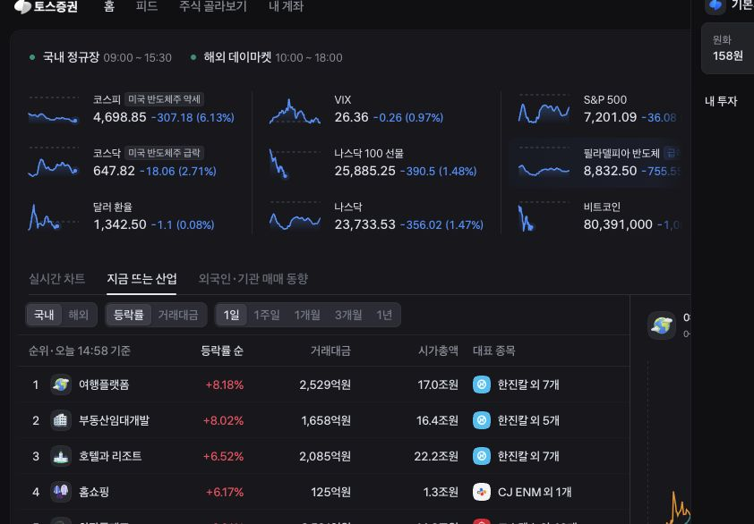
공개 시세 영역의 보기 전환.
1139×772 · 영역 캡처 · 2026-11-25 14:58:49
공개 시세 영역의 보기 전환.
1139×772 · 영역 캡처 · 2026-11-25 14:58:49
공개 시세 영역의 보기 전환.
1139×772 · 영역 캡처 · 2026-11-25 14:58:50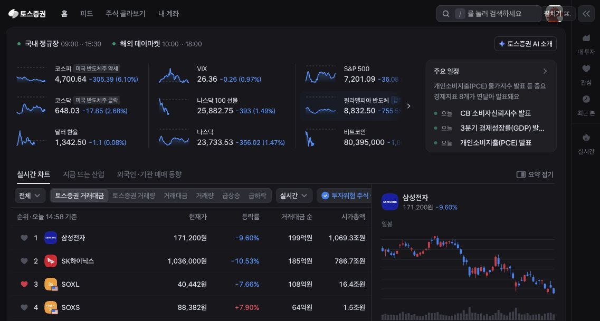
리모콘이 닫히고 본문이 넓어지는 상태.
1139×772 · 영역 캡처 · 2026-11-25 14:58:50
오른쪽 레일의 재진입과 본문 폭 변화. 보유·주문 영역 제외.
1139×772 · 영역 캡처 · 2026-11-25 14:58:50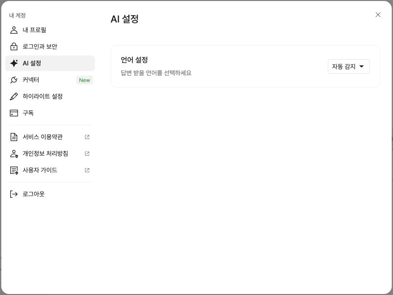
답변 언어 등 연구 도우미 개인 설정과 대응.
1139×772 · 영역 캡처 · 2026-11-25 14:30:12
브라우저 확장에서 쓸 하이라이트 옵션과 설정 진입.
1139×772 · 영역 캡처 · 2026-11-25 14:30:15
공용 자료와 개인 데스크톱 메뉴의 관계.
1139×772 · 영역 캡처 · 2026-11-25 14:34:58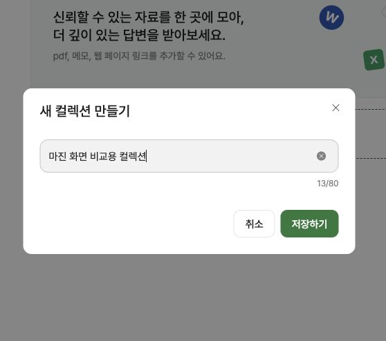
새로운 비교용 항목만 입력.
1139×772 · 영역 캡처 · 2026-11-25 14:35:01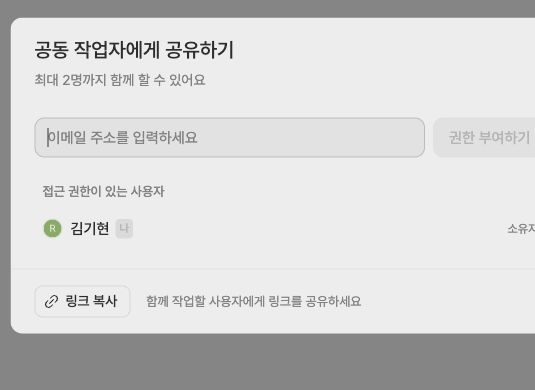
테스트 모음에 대해 공유 폼만 열어 봄.
1139×772 · 영역 캡처 · 2026-11-25 14:54:59
개인 사이드바를 제외한 검색·작업 시작 화면.
1280×720 · 영역 캡처 · 2026-11-25 14:55:24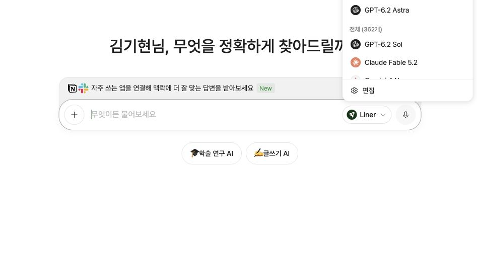
현재 플랜에서 선택 가능한 모델과 잠긴 항목이 구분되는 화면.
1280×720 · 영역 캡처 · 2026-11-25 14:55:56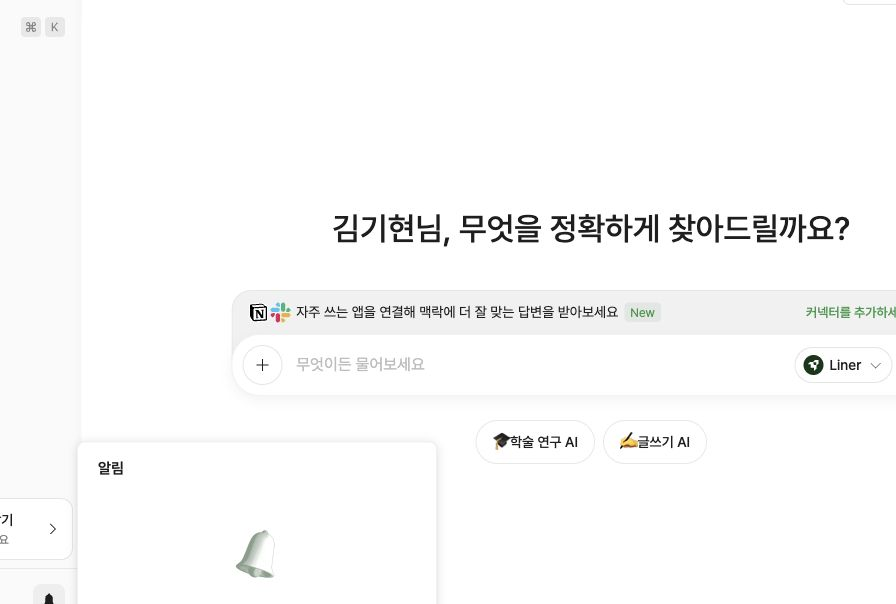
계정 식별 없이 알림 구조와 빈 상태를 봄.
1280×720 · 영역 캡처 · 2026-11-25 14:57:37
브라우저를 다시 열어도 업로드한 텍스트가 보임.
1139×772 · 영역 캡처 · 2026-11-25 15:04:41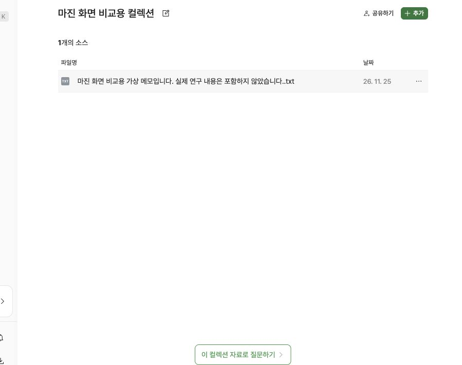
자체 테스트 메모 행을 눌렀을 때 목록에 표시된 상태. 별도 뷰어 화면은 포함하지 않았다.
1139×772 · 영역 캡처 · 2026-11-25 15:04:41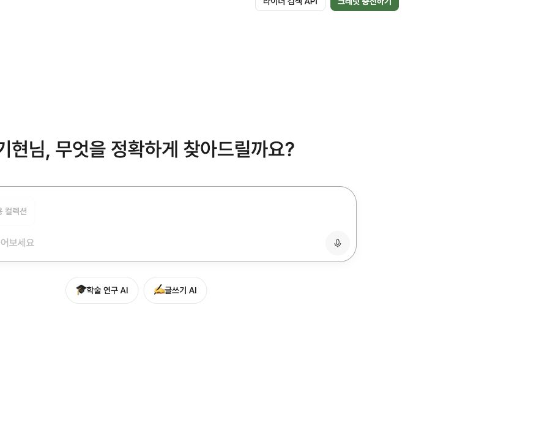
다음 질문에 컬렉션을 붙이는 경로. 요청은 보내지 않음.
1139×772 · 영역 캡처 · 2026-11-25 15:05:20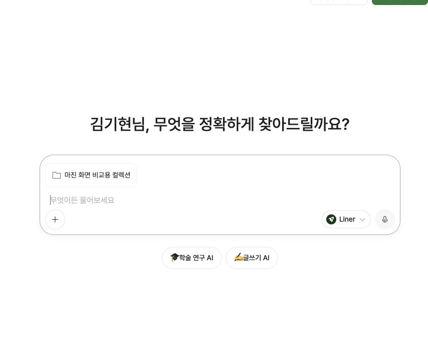
컬렉션을 걸고 질문 창까지 진입. 충전이나 결제 없이 보이는 상태.
1139×772 · 영역 캡처 · 2026-11-25 15:05:47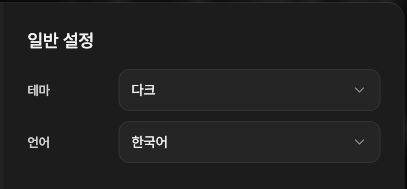
프로필 빠른 전환에서 다크를 선택한 결과가 일반 설정에 표시됨.
1139×772 · 영역 캡처 · 2026-11-25 14:28:30
계정 식별 영역 아래 테마·언어·튜토리얼.
1139×772 · 영역 캡처 · 2026-11-25 14:32:02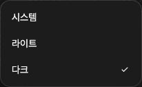
세 선택지를 계정 빠른 메뉴에서 바꾸는 화면.
1139×772 · 영역 캡처 · 2026-11-25 14:34:58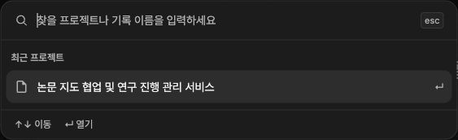
검색 진입 시 입력에 초점.
1139×772 · 영역 캡처 · 2026-11-25 14:34:59
실제 업무 자료 없이 크레딧을 쓰지 않는 공식 예시.
1139×772 · 전체 화면 · 2026-11-25 14:35:00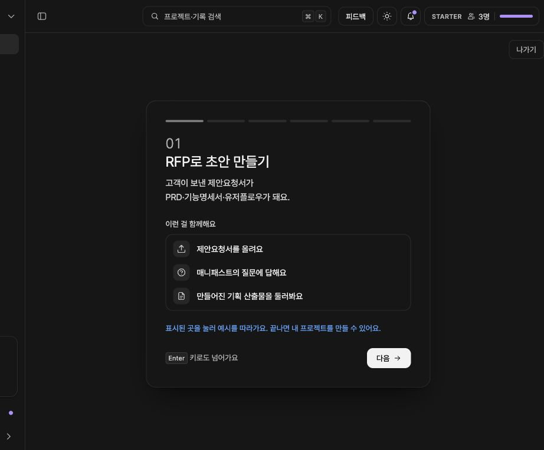
고객사 샘플 자료만 사용한 화면.
1139×772 · 영역 캡처 · 2026-11-25 14:35:01
첫 단계에서 예시 파일을 올리도록 안내하는 화면.
1139×772 · 영역 캡처 · 2026-11-25 14:35:01
공식 예시 파일과 프롬프트 자동 입력. 기본화면에 일반 크레딧 문구도 보이는 상태.
1139×772 · 영역 캡처 · 2026-11-25 14:35:01
공식 고객사 샘플에서 직접 열어 봄.
1139×772 · 영역 캡처 · 2026-11-25 14:52:39
공식 고객사 샘플에서 직접 열어 봄.
1139×772 · 영역 캡처 · 2026-11-25 14:52:39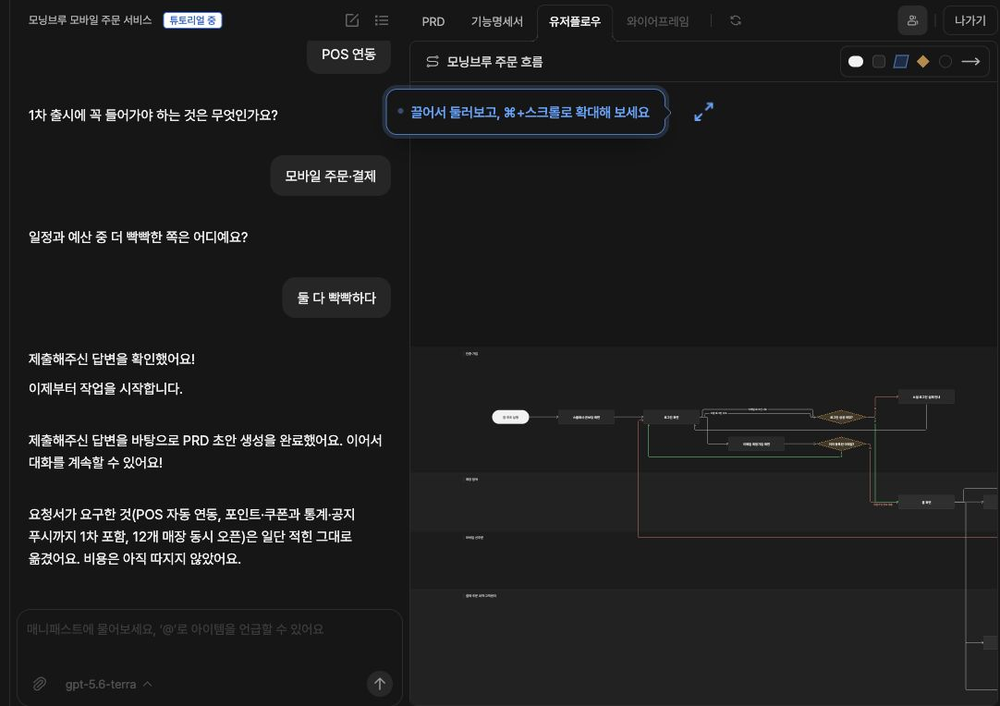
공식 고객사 샘플에서 직접 열어 봄.
1139×772 · 영역 캡처 · 2026-11-25 14:52:39
공식 고객사 샘플에서 직접 열어 봄.
1139×772 · 영역 캡처 · 2026-11-25 14:55:00
일반 예시 첫 미팅 준비 화면과 버튼.
1139×772 · 영역 캡처 · 2026-11-25 14:55:24
샘플의 준비된 회의 안건 프롬프트를 실행.
1139×772 · 영역 캡처 · 2026-11-25 14:55:56
공식 샘플의 미팅 안건 결과 또는 그 다음 단계 안내.
1139×772 · 영역 캡처 · 2026-11-25 14:56:28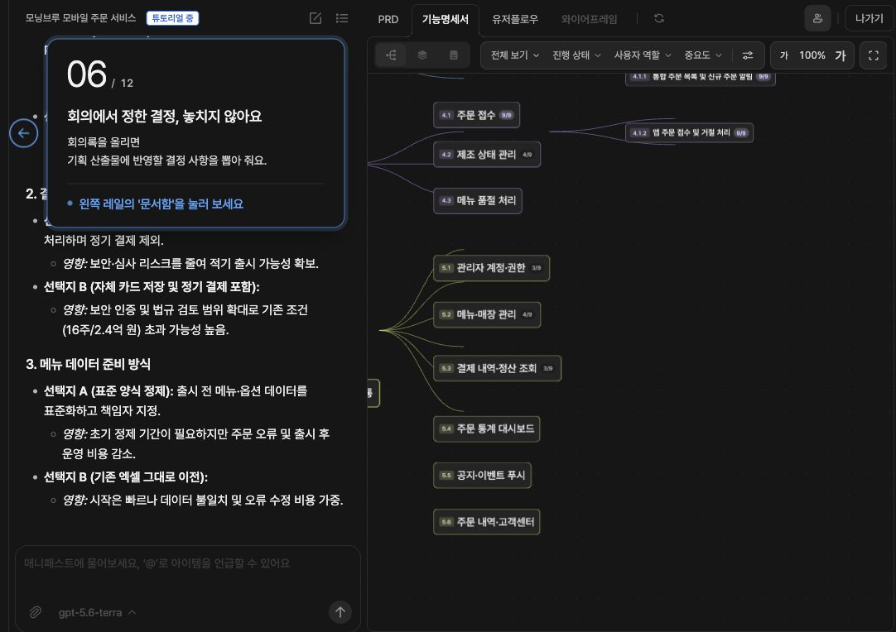
샘플 회의록으로 문서를 갱신하는 도중 화면.
1139×772 · 영역 캡처 · 2026-11-25 14:57:09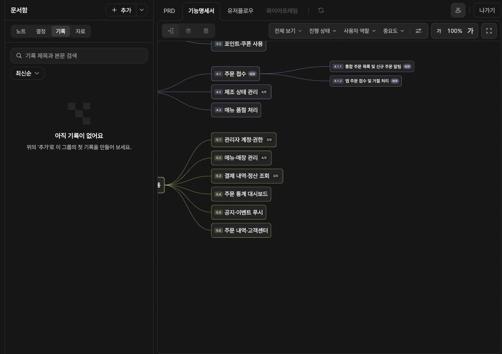
자료를 문맥 안에서 함께 보는 조작.
1139×772 · 영역 캡처 · 2026-11-25 14:57:37
기록 추가 드롭다운에서 업로드 방식 선택.
1139×772 · 영역 캡처 · 2026-11-25 14:58:13
개인 파일 대신 준비된 샘플 회의록.
1139×772 · 영역 캡처 · 2026-11-25 14:58:48
첨부 진행 중 볼 수 있는 저장 방식과 대상.
1139×772 · 영역 캡처 · 2026-11-25 15:04:01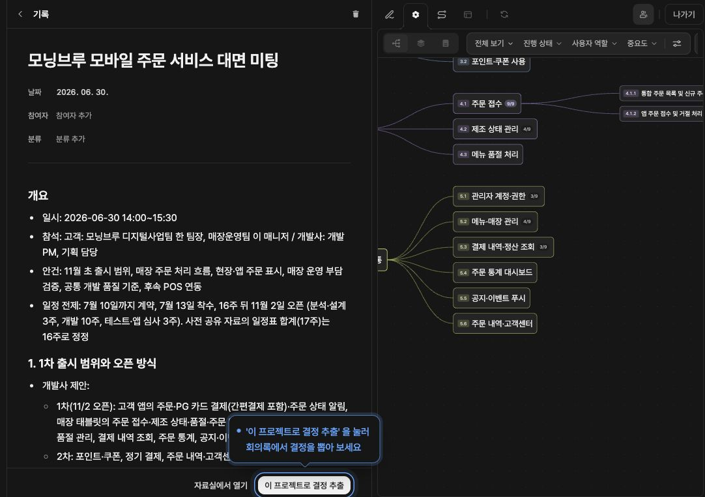
본문 미리보기 확인 뒤 샘플 회의록을 기록으로 추가.
1139×772 · 영역 캡처 · 2026-11-25 15:04:41
원문 기록에서 기획 산출물로 이어지는 결정 추출 조작.
1139×772 · 영역 캡처 · 2026-11-25 15:05:20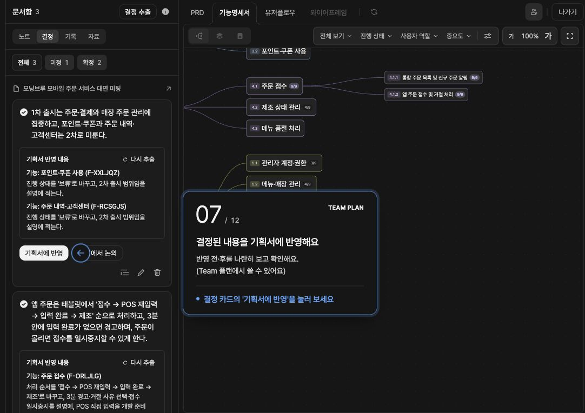
회의록에서 뽑은 후보를 문서에 반영하기 전.
1139×772 · 영역 캡처 · 2026-11-25 15:05:47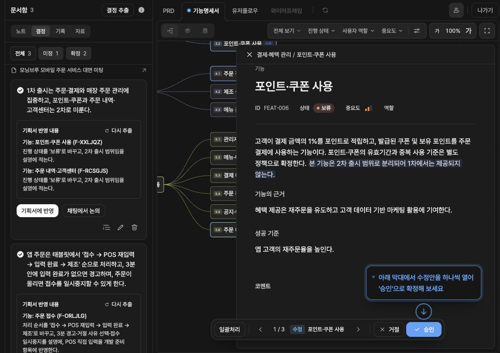
정식 팀 기능을 공식 예시에서 눌러 본 장면. 결제 없음.
1139×772 · 영역 캡처 · 2026-11-25 15:06:24
선택된 수정안을 확인하고 승인 버튼을 실행.
1139×772 · 영역 캡처 · 2026-11-25 15:06:45
선택과 승인 결과·남은 상태를 확인.
1139×772 · 영역 캡처 · 2026-11-25 15:07:13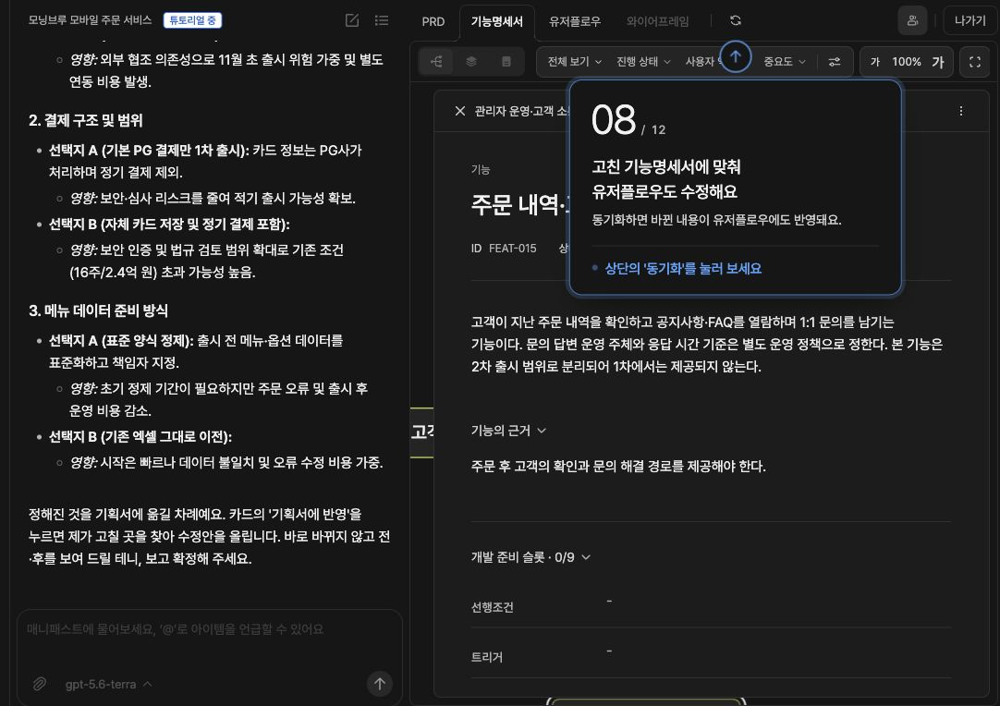
가상 회의록 변경안 적용 뒤 이어지는 단계.
1139×772 · 영역 캡처 · 2026-11-25 15:07:27
같은 프로젝트에서 바뀐 내용이 다른 보기로 갈 때의 선택 화면.
1139×772 · 영역 캡처 · 2026-11-25 15:07:50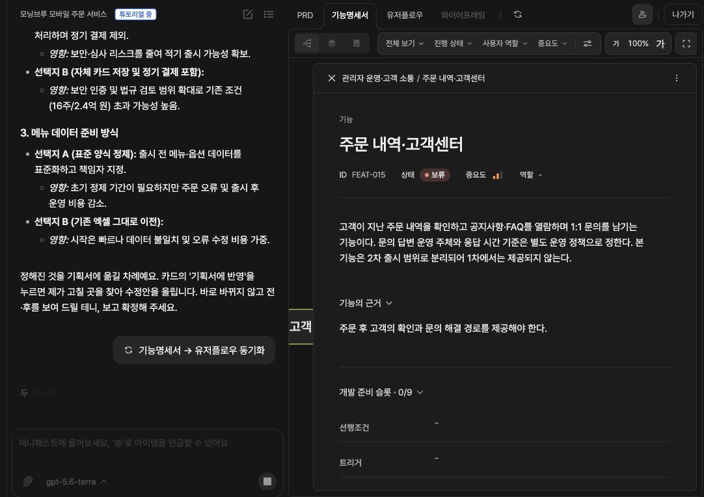
기능명세서에서 유저플로우로 동기화 시작을 눌렀다. 이 프레임은 실행 직후다.
1139×772 · 영역 캡처 · 2026-11-25 15:08:30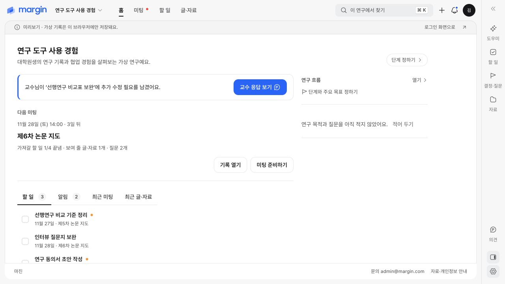
가상 연구의 다음 미팅, 할 일, 연구 방향.
1280×720 · 전체 화면 · 2026-11-25 14:28:56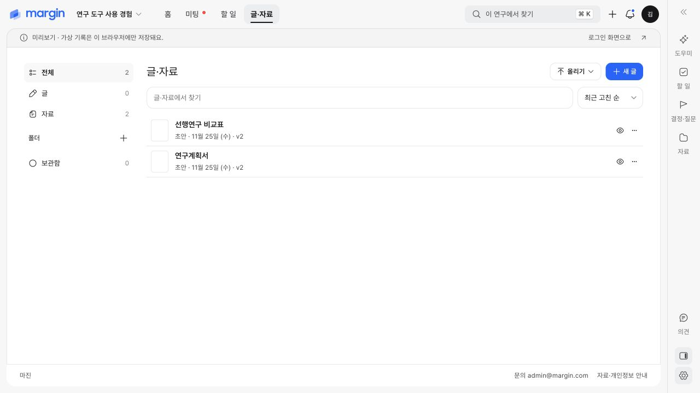
폴더·자료·문서 목록과 올리기·새 글.
1280×720 · 전체 화면 · 2026-11-25 14:28:57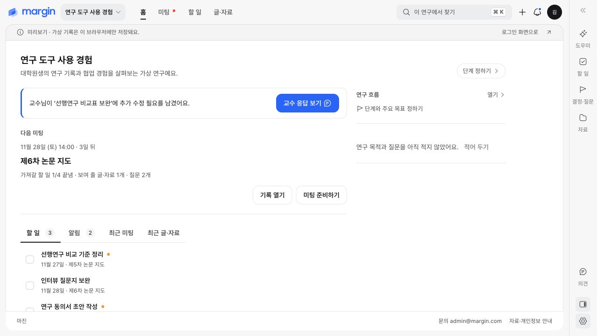
현재 연구와 모든 연구 보기·새 연구 만들기.
1280×720 · 전체 화면 · 2026-11-25 14:28:57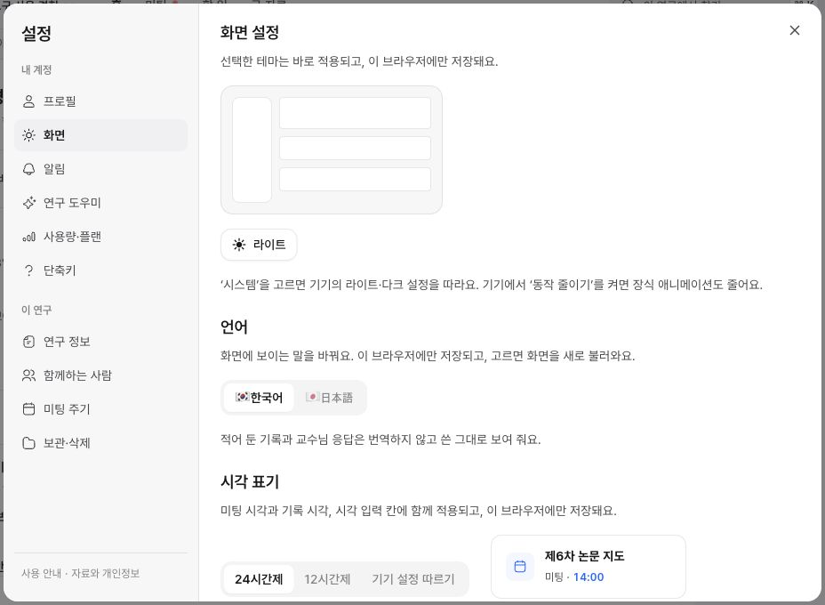
색상 모드·언어·시각 표시·사이드 창 위치·효과음.
1280×720 · 영역 캡처 · 2026-11-25 14:28:57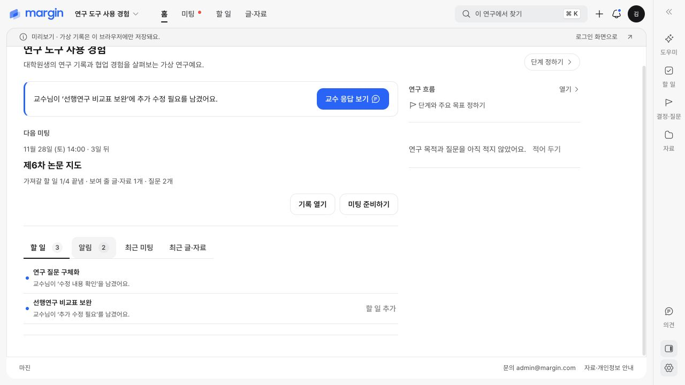
같은 홈에서 목록만 바뀜.
1280×720 · 전체 화면 · 2026-11-25 14:28:57
현재 연구를 떠나지 않고 사이드 창으로 열림.
1280×720 · 전체 화면 · 2026-11-25 14:28:58
같은 홈에서 목록만 바뀜.
1280×720 · 전체 화면 · 2026-11-25 14:28:58
같은 홈에서 목록만 바뀜.
1280×720 · 전체 화면 · 2026-11-25 14:28:58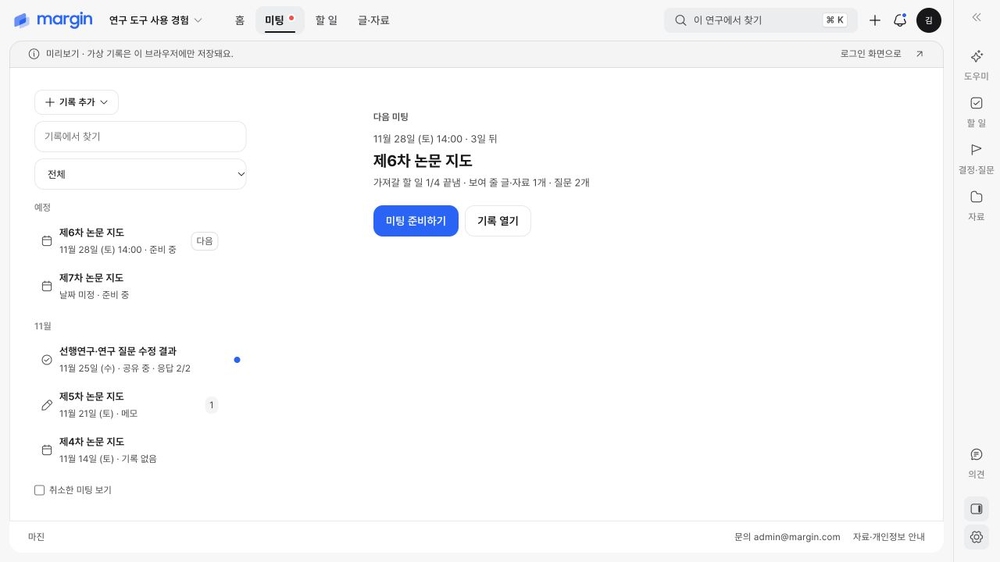
녹음·서면·검토·시간 조율 같은 기록 유형과 예정 미팅.
1280×720 · 전체 화면 · 2026-11-25 14:29:40
입력 초성과 빠른 이동이 있는 명령 팔레트.
1280×720 · 전체 화면 · 2026-11-25 14:29:40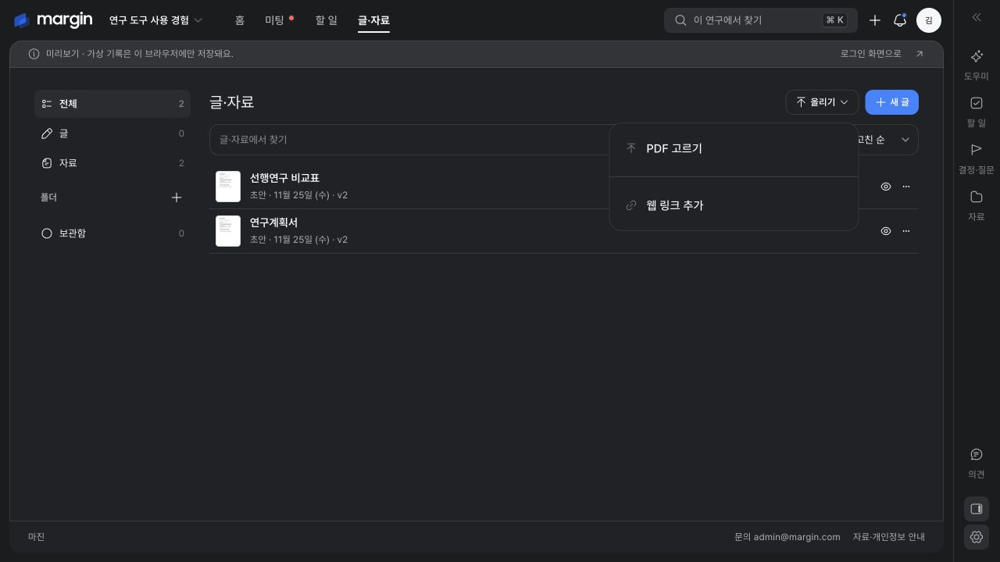
PDF 올리기와 웹 링크 추가 선택.
1280×720 · 전체 화면 · 2026-11-25 14:29:41
가상 연구의 제안 대기 목록.
1280×720 · 전체 화면 · 2026-11-25 14:29:41
화면 설정은 한 버튼으로 라이트·다크를 전환한다. 시스템 선택은 계정 메뉴에 있다.
1280×720 · 영역 캡처 · 2026-11-25 14:29:41
전역 새로 만들기와 별개.
1280×720 · 전체 화면 · 2026-11-25 14:29:43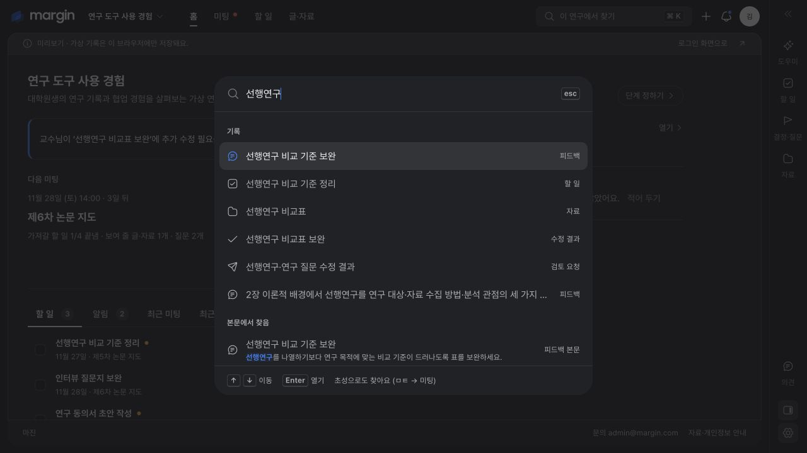
가상 자료·할 일이 검색됨.
1280×720 · 전체 화면 · 2026-11-25 14:29:43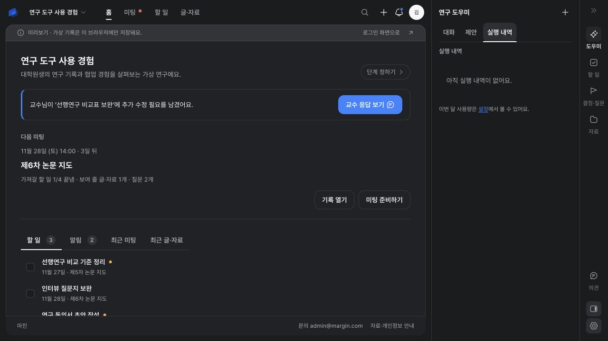
같은 패널의 별도 이력 탭.
1280×720 · 전체 화면 · 2026-11-25 14:29:43
없는 이름을 넣어 빈 결과를 확인.
1280×720 · 전체 화면 · 2026-11-25 14:29:44
연구 전환기에서 새 연구 만들기를 눌렀을 때 입력 화면으로 전환되는 중간 상태.
1280×720 · 전체 화면 · 2026-11-25 14:30:41
붙여넣기 방식의 미팅 기록 진입.
1280×720 · 전체 화면 · 2026-11-25 14:30:41
어느 연구 화면에서나 들어오는 생성 메뉴.
1280×720 · 전체 화면 · 2026-11-25 14:30:42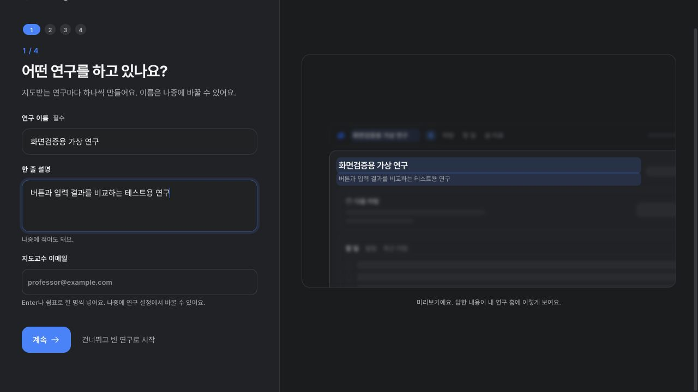
오른쪽 미리보기에 입력값 표시.
1280×720 · 전체 화면 · 2026-11-25 14:31:10
문서 제목과 공개 범위 입력 창.
1280×720 · 전체 화면 · 2026-11-25 14:31:11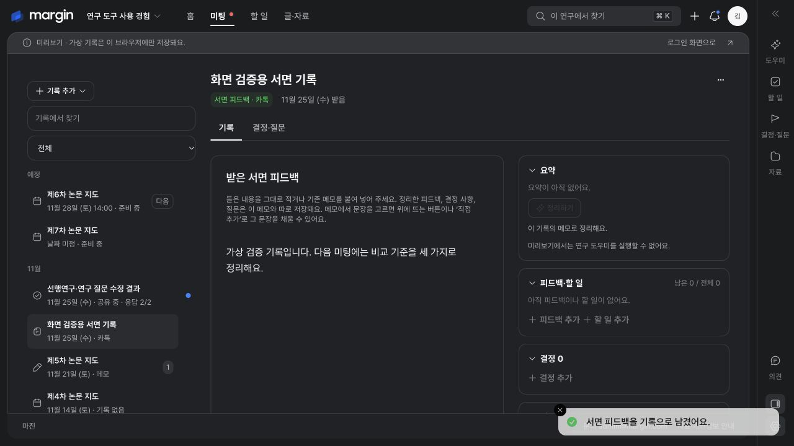
가상 제목과 내용 저장 뒤 미팅 기록에 진입.
1280×720 · 전체 화면 · 2026-11-25 14:31:12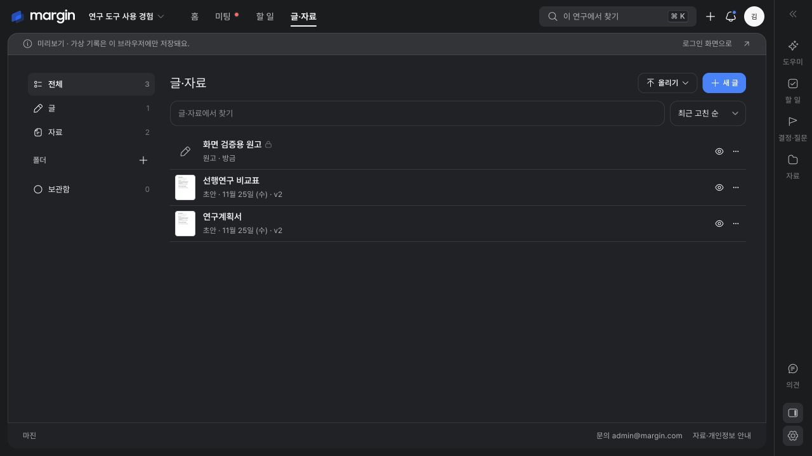
실제 저장 뒤 새 원고 페이지.
1280×720 · 전체 화면 · 2026-11-25 14:31:35
가상 계정. 설정창 밖에서 직접 전환하는 조작.
1280×720 · 전체 화면 · 2026-11-25 14:31:35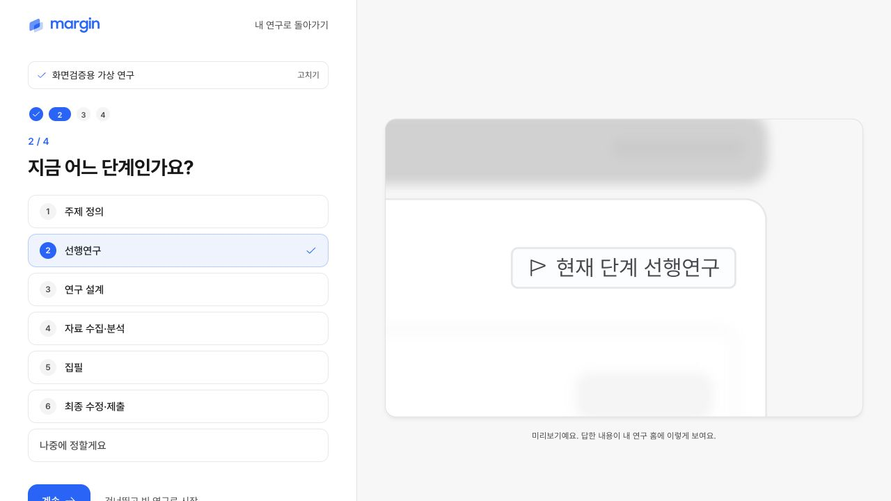
선행연구를 직접 고른 뒤 다음 질문.
1280×720 · 전체 화면 · 2026-11-25 14:34:58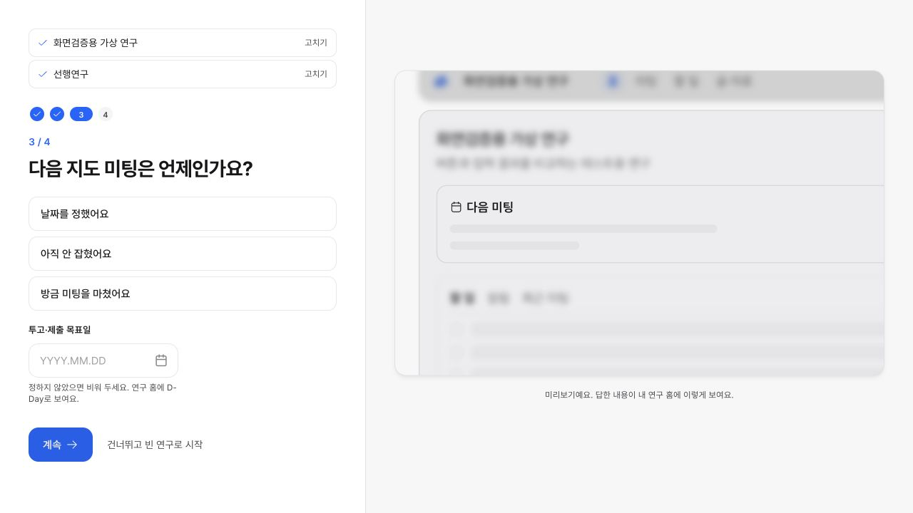
다음 미팅과 목표일을 입력하는 구간.
1280×720 · 전체 화면 · 2026-11-25 14:34:59
가상 원고를 작성한 화면. 저장한 버전과 비교한 장면은 뒤에 따로 있다.
1280×720 · 전체 화면 · 2026-11-25 14:34:59
가상 제목·내용 저장 직전.
1280×720 · 영역 캡처 · 2026-11-25 14:35:00
미팅 원문 옆의 피드백·할 일에 새로 저장.
1280×720 · 전체 화면 · 2026-11-25 14:35:00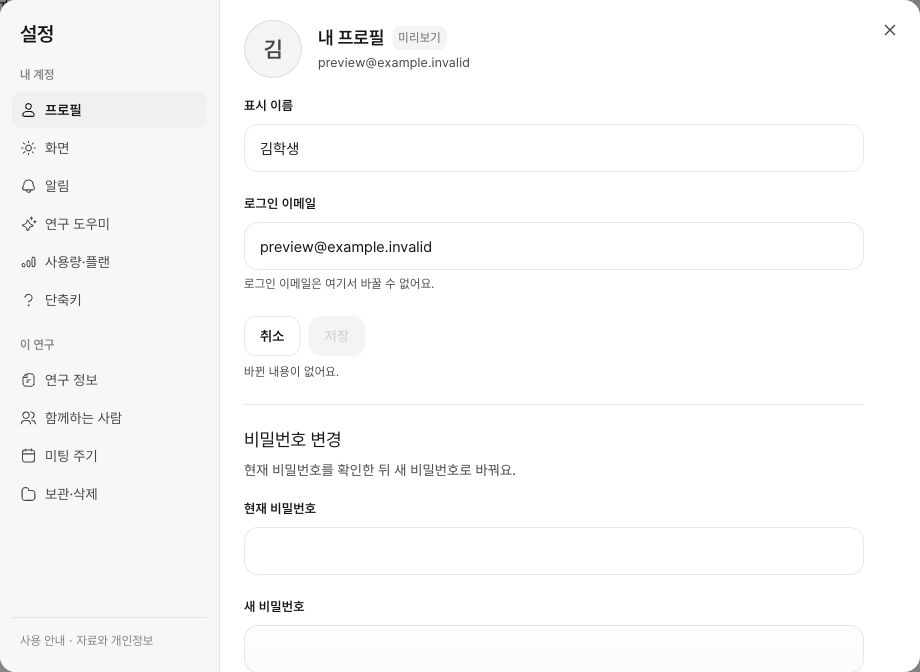
표시 이름, 로그인 이메일, 비밀번호 변경 폼
1280×720 · 영역 캡처 · 2026-11-25 14:54:06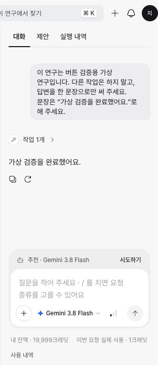
가상 문장 한 건만 요청. 현재 사용량과 응답 화면.
1280×720 · 영역 캡처 · 2026-11-25 14:56:27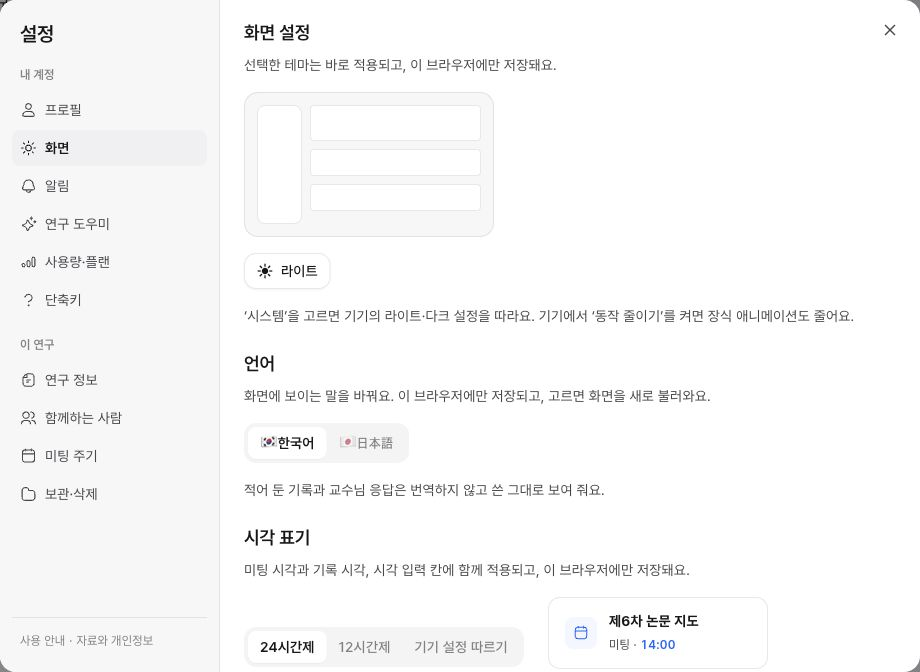
색상 모드, 언어, 시각, 사운드, 창 위치
1280×720 · 영역 캡처 · 2026-11-25 14:54:07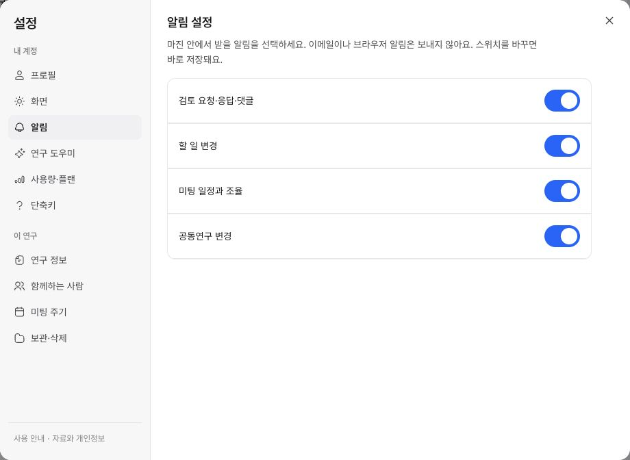
검토·할 일·일정·공동연구 알림 선택
1280×720 · 영역 캡처 · 2026-11-25 14:54:07
기본 모델·답변 깊이, 개인 지침
1280×720 · 영역 캡처 · 2026-11-25 14:54:07
잔액·이력·공개 플랜 안내
1280×720 · 영역 캡처 · 2026-11-25 14:54:07
현재 앱의 단축키 표
1280×720 · 영역 캡처 · 2026-11-25 14:54:08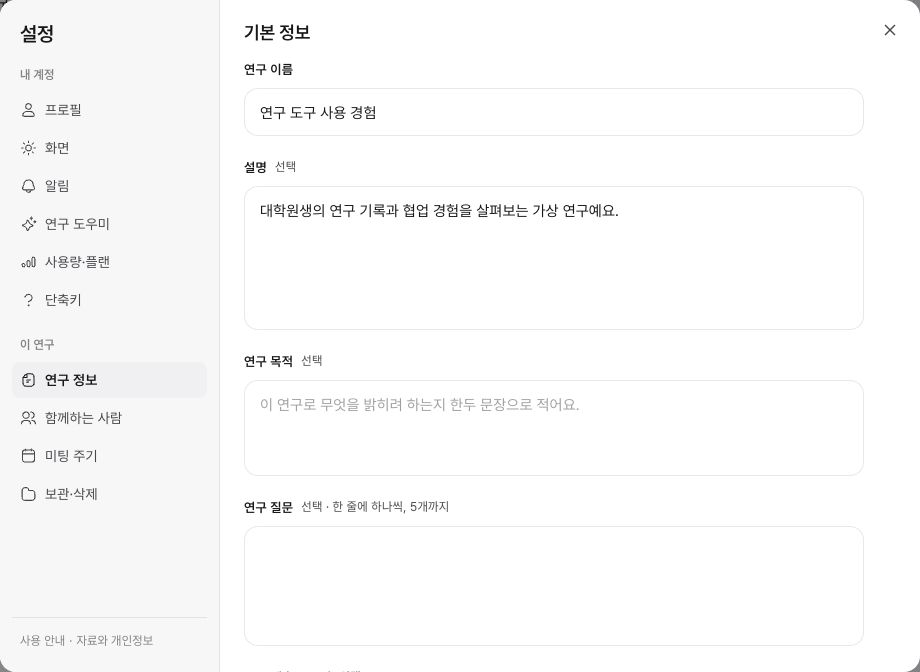
연구 질문·투고·지도교수와 저장 조작
1280×720 · 영역 캡처 · 2026-11-25 14:54:08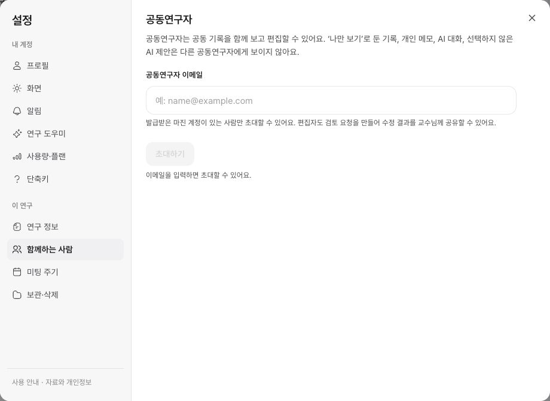
초대 폼과 역할·상태
1280×720 · 영역 캡처 · 2026-11-25 14:54:08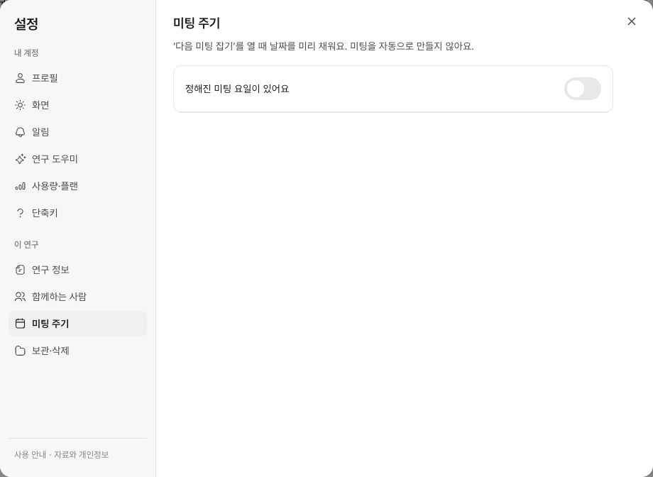
요일·시각·반복과 다음 일정
1280×720 · 영역 캡처 · 2026-11-25 14:54:09
보관, 휴지통 이동과 설명
1280×720 · 영역 캡처 · 2026-11-25 14:54:09읽음 처리와 교수 응답 알림을 확인하는 진입점.
1280×720 · 전체 화면 · 2026-11-25 14:55:25
가상 알림의 전부·미확인 조작.
1280×720 · 영역 캡처 · 2026-11-25 14:55:56
검토 알림을 제외하고 읽음 처리하는 버튼을 실제 클릭.
1280×720 · 영역 캡처 · 2026-11-25 14:55:57
단계 카드와 주요 목표. 가상 연구.
1280×720 · 전체 화면 · 2026-11-25 14:57:07같은 가상 연구의 로드맵 보기.
1280×720 · 전체 화면 · 2026-11-25 14:57:07
같은 가상 연구의 로드맵 보기.
1280×720 · 전체 화면 · 2026-11-25 14:57:07단계 보기에서 달력 탭으로 전환.
1280×720 · 전체 화면 · 2026-11-25 14:57:08
검토 항목, 두 사람이 보는 원고, 교수 응답과 댓글이 각 열에 있음.
1280×720 · 전체 화면 · 2026-11-25 14:57:08본문 PDF에서 댓글 위치를 정하는 모드.
1280×720 · 전체 화면 · 2026-11-25 14:57:08
버튼 자체는 라이트·다크 2단 전환. 시스템은 계정 메뉴에서 별도 선택.
1280×720 · 영역 캡처 · 2026-11-25 14:57:09
학생이 공유 상태·수신자·메일 알림 등을 확인하는 단계. 가상 데이터.
1280×720 · 영역 캡처 · 2026-11-25 14:57:36
이전 차수와 새 수정 결과/파일/설명 관련 입력을 확인. 가상 자료.
1280×720 · 영역 캡처 · 2026-11-25 14:57:36가상 검토 한 항목에 새 차수 추가. 공개 상대와 메일은 실제 외부가 아닌 로컬 미리보기.
1280×720 · 전체 화면 · 2026-11-25 14:58:13
자료별 이름·유형과 기본 나만 보기. 모두 가상 PDF.
1280×720 · 영역 캡처 · 2026-11-25 15:04:40가상 PDF 2개가 목록에 표시됨. 추가 후 원래 목록에서 계속 작업.
1280×720 · 전체 화면 · 2026-11-25 15:04:40합성 파일을 목록 위에서 열어 문맥과 이동 버튼 확인.
1280×720 · 전체 화면 · 2026-11-25 15:05:20합성 PDF의 첫 페이지가 옆 미리보기 창에 나타난 상태.
1280×720 · 전체 화면 · 2026-11-25 15:05:47자료 목록 밖의 PDF 뷰어.
1280×720 · 전체 화면 · 2026-11-25 15:06:24
텍스트 보기 버튼을 눌렀다. 이 프레임은 전환 직후 화면이다.
1280×720 · 전체 화면 · 2026-11-25 15:06:24
현재 버전을 보면서 다음 버전을 준비하는 대화상자.
1280×720 · 영역 캡처 · 2026-11-25 15:06:45가상 파일로 다음 버전 추가. 이전 버전과 함께 볼 수 있는 상태.
1280×720 · 전체 화면 · 2026-11-25 15:07:13새 v2를 만든 다음 기존 v1을 골라서 원래 파일을 읽음.
1280×720 · 전체 화면 · 2026-11-25 15:07:51계정 식별 부분을 제외한 사용량·설정 메뉴. 테마 항목은 여기서 미관찰.
1139×772 · 영역 캡처 · 2026-11-25 14:30:12
⌘K 검색 입력과 초기 추천.
901×772 · 영역 캡처 · 2026-11-25 14:29:42
메뉴·프로젝트가 나뉘는 검색 결과.
901×772 · 영역 캡처 · 2026-11-25 14:30:11
없는 검색어에 초기 상태와 구분되는 결과 없음.
901×772 · 영역 캡처 · 2026-11-25 14:30:12검색어와 일치하는 화면이 없어요.